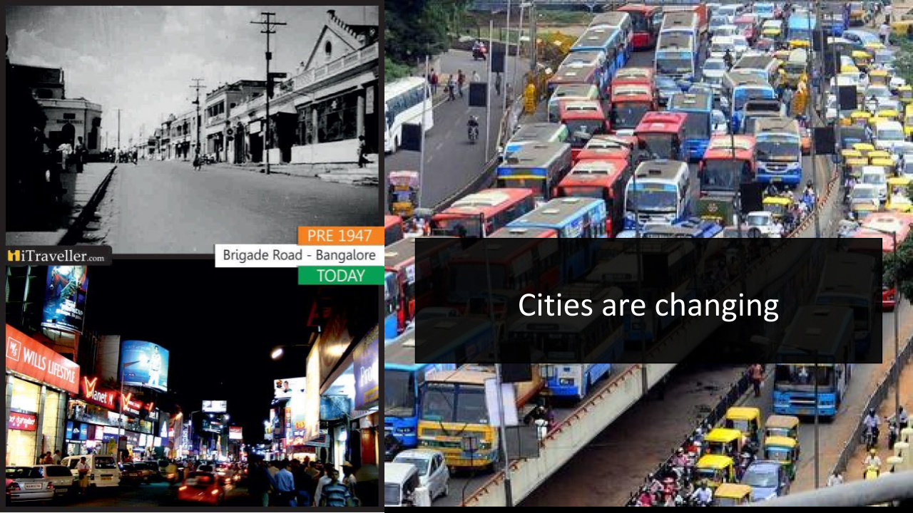
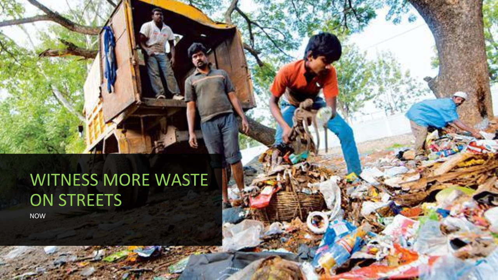
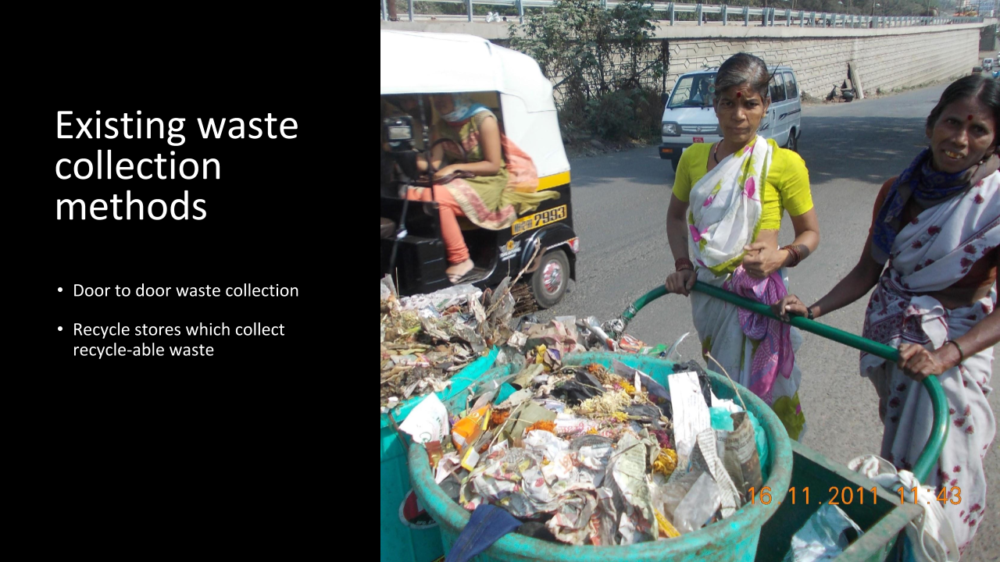

Promote sustainability within neighborhoods in India.
Type :Indiviual Project
Role : Interaction Designer
Duration : 3.5 months
Tools Used : Sketch, Invision
User research (Surveys/Interview)
Persona Development
Information Artchitechure
Inforation Visualization
Paper Prototype/Digita Prototype
Growing up, I saw my city which was once termed the ‘Green City’ in India turn into a town filled with trash. The exodus of the population, IT boom and uncontrolled pollution, a disorder in waste management has resulted in a huge hit on the environment.
Back at home I regularly observed how people managed their waste and as I analyzed the situation, I felt the issue was in perception. Recycling is not mandatory in my City. The government had not legalized waste segregation until recently. In a neighborhood of 10 families, probably only 2 segregate waste and recycle. Another issue was the improper waste collection. The authorities would pick-up the waste on alternate days, and due to the mismanagement within the Municipality office, the staff at the low-level of the hierarchy are unmonitored. Such issues resulted in waste pick-ups on odd days making the residents frustrated with the system and the residents dealt with this situation by dumping waste on barren or empty lands nearby. Over a period, the waste would seep into the ground, and become part of “our neighborhood.” The situation is similar in many parts of the world. Countries are unaware of what impact they have on their environment. In fact, America is ranked last in sustainable behavior in the Greendex report, which is a survey conducted by the National Geographic Society and GlobeScan.
Fig: Visualization of the Process followed for the project
The initial research on existing research material and behavioral influences, helped me understand that social comparison, a theory from psychology could very well motivate users in the context of sustainability. Social comparison theory states that we weigh our ourselves concerning others around us as a result of which we always try to make self-evaluation with others and shift between social groups to increase our utility. The initial ideas revolved around motivating kids or teenagers to recycle or reuse by creating a platform to reuse products within the neighborhood. Although the concept was great, I found it lacked motivation. Why would users need such a product? To understand the challenges they faced, I interviews two of my neighbors, who are both mothers of two children.
Fig: Two personas for the project
Knowing how well my neighbors are doing, would in a right way put some pressure on me to maintain or reduce my families waste consumption
Competition is good, and I'm okay with it as long as my family is anonymous to others. If I knew the Smiths next door recycled less than me, it would be like pin-pointing which is not constructive for the neighborhood.
For these reasons the application aggregates the data from an area and provides an average per person per family consumption or recycling traits within a neighborhood. E.g.. If you have a family of ten and your community is filled with families of four, then comparing your family (10 people) waste consumption with that of an average consumption of a family (4 people) is not accurate or helpful. Hence, the application finds a per person waste consumption/recycle an average of your neighborhood and multiplies it by four for a better assessment.
To facilitate personalized visualizations for families the household members is considered. This way the application offers a pictorial representation for a family with children and a graphical representation for a family with teenagers or adults.
PhotoGrid: Design decisions for features and information architecture
Fig: Visualization of the Process followed for the project
Fig: Visualization of the Process followed for the project
The prototypes were tested with the participants who were interviewed earlier. The noticed that:
Video: Demonstration of interactions through paper prototype
At this point, I had a lot of features that I thought would make the product amazing but a product rich in features need not be usable. So, I had to step back to gain better understanding of what people desired. Hene, I turned to the people I had excellent access to, i.e., people in and around my neighborhood back in Bangalore. I formulated a survey focused on the challenges they faced and also tried to understand what people value most. The following are some of responses from the survey
PhotoGrid: Survey results
The final design shows a smart bin that tracks waste consumption and recycling habits of a family to educate them about better practices for the same.
Fig: Smart bin with pervasive computing
The critical features of the application are:
Fig: Smart bin with pervasive computing
You can view the hi-fi prototype on the link
In the user testing, one of the users, i.e., my neighbor at Ann Arbor (one of the interviewees) appreciated the idea calling it a "novel application." Some of the users gave me better insights on the application. Based on their suggestions, the following are some of the improvements I would like to add to the application.